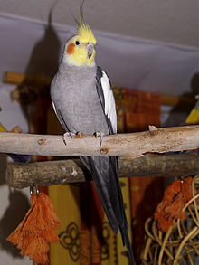
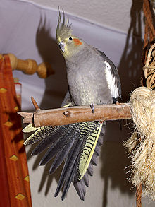
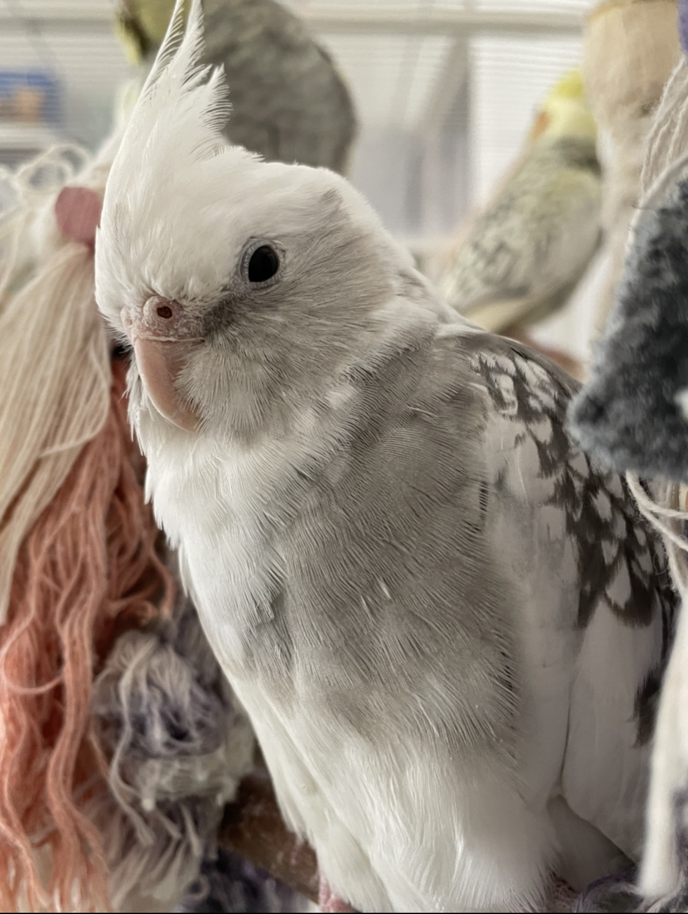
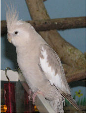

عروس هلندی
جنس نر
جنس ماده
| جانوران | :فرمانرو |
| طنابداران | :شاخه |
| پرندگان | :رده |
| طوطی | :راسته |
| طوطی کاکلی | :تیره |
| Nymphicus | :سرده |
| عروس هلندی | :گونه |
رنگ قرمز محل سکونت عروس هلندی میباشد
عروس هلندی (به انگلیسی: Cockatiel) یک طوطی با جثه متوسط است که خاستگاه اصلی آنها به استرالیا بر می گردد. آنها به عنوان حیوانات خانگی در سراسر جهان ارزشمند هستند و پرورش آنها نسبتا آسان است.[۲] این پرندگان پس از مرغ عشق محبوبترین پرندگان زینتی محسوب میشوند.[۳]
این نوع طوطیها توانایی یادگیری صحبت کردن را دارند، اما چون نوع نر این پرنده حنجره کاملتری نسبت به نوع ماده دارد، پرنده نر بهتر میتواند صحبت کند. برای آموزش صحبت کردن به پرنده بهتر است که از زمان جوجگی (حدوداً ۴ ماهگی) با آن تمرین شود. در صورت مداومت و تکرار صحیح کلمات، پرنده از حدود چهارماهگی الی ۱ سالگی شروع به صحبت به صورت ناواضح میکند و در اثر تمرین کمکم واضحتر میتواند کلمات را ادا کند. عروس هلندیها جانوران بسیار اجتماعی هستند و از همنشینی با انسانها بسیار لذت میبرند. عروس هلندی ها بازیگوش و با انسان ها زود صمیمی میشوند و صاحب شان را با صدای خودشان صدا می کنند و عاشق نوازش هستند.
این پرنده متعلق به خانوادهٔ طوطی کاکلی میباشد. بنابراین می تواند با دیگر طوطی های کاکل دار جفت گیری و جوجه آوری کند. عروس هلندی ها بومی مناطقی گسترده در سراسر استرالیا هستند که مناطق مورد علاقه آنها زمینهایی پوشیده شده با علف و بوته زارها و درختان کوتاه است.
ریشه شناسی
عروس هلندی در ابتدا توسط رابرت کر، نویسنده و طبیعتشناس اسکاتلندی در سال ۱۷۹۳ با نام Psittacus hollandicus توصیف شد. نام جنس آن منعکس کننده تجربه سفر یکی از اولین گروه های اروپایی برای دیدن پرندگان در زیستگاه بومی خود است. مسافران تصور می کردند که پرندگان آنقدر زیبا هستند که نام آنها را به نام پوره های افسانه ای نامگذاری کردند. نام خاص hollandicus به نیوهلند، نامی تاریخی برای استرالیا اشاره دارد.[۲]
روابط بیولوژیکی این پرندگان برای مدت طولانی نامشخص بود. در حال حاضر در یک زیرخانواده Nymphicinae قرار می گیرند، اما گاهی اوقات در گذشته در میان طوطی های دم پهن Platycercinae طبقه بندی می شدند. این موضوع با مطالعات مولکولی حل شد. مطالعهای در سال 1984 روی آلوزیمهای پروتئینی ارتباط نزدیکتر آن را با عروس هلندی ها نسبت به سایر طوطیها نشان داد، و دادههای توالی 12S rRNA میتوکندری آن را در میان زیرخانواده Calyptorhynchinae (عروس هلندی های تیره) قرار میدهد. ویژگی مورفولوژیکی منحصر به فرد پاراکیت (به معنی طوطی دم دراز) نتیجه کاهش اندازه و تغییر توله اکولوژیکی است.
ویژگی ها
ویژگی های ظاهری
تاج این پرنده بیانگر وضعیت احساسی آن در مواقع مختلف است. در وضعیت عادی و آرام پرنده، تاج کمی به سوی عقب خمیدهاست. در هنگام هیجان و همچنین ترس، تاج کاملاً صاف و رو به بالا است و در مواقع عصبانیت پرنده، تاج به صورت کاملاً خوابیده در میآید. این پرنده بر خلاف اکثر طوطیهای کاکلی دارای پرها و دمی بلندی است که طولشان حدوداً نیمی از طول کل بدن پرنده است. طول این پرنده حدوداً ۳۰ تا ۳۳ سانتیمتر است و در واقع کوچکترین گونه از طوطیهای کاکلی به شمار میآید.[۴]
رنگهای پرنده شامل: خاکستری، سفید، کرم، زرد و قهوهای است. بر روی سر پرنده کاکلی بلند و زیبا قرار دارد و بر روی گونههای آن یک لکه سرخ رنگ دیده میشود، این لکه در ساختار رنگی وایتفیس (Whiteface) دیده نمیشود. پر و بال این پرنده معمولاً نیمه خاکستری است و در قسمت زیرین بدن روشنتر است. یک لکه نارنجی رنگ بر روی گونهها و سفیدی حاشیه بالها از دیگر علایم مشخصه این پرنده است. یک ردیف از لکههای زردرنگ بر قسمت زیرین بال پرنده ماده دیده میشود که در نرها وجود ندارد. همچنین مادهها پرهایی هاشور خورده در دم و نرها پرهای دم ساده دارند. بعضی از انواع جهش یافته عروس هلندی به رنگ زرد روشن و چشمهای قرمز رنگ هستند و جنس ماده آنها پرهای دم باریکتری دارد. به این ساختار رنگی لوتینو (Lutino) گفته میشود. در اثر جهش ژنتیکی ساختار رنگی دیگری با نام وایتفیس (Whiteface) نیز وجود دارد که رنگهای بدن این پرندگان را رنگهای خاکستری یا قهوهای و سفید تشکیل میدهد و این ساختار فاقد لپ قرمز رنگ است. گونه کاملاً سفیدرنگ زیرمجموعه ساختار وایت بوده و دارای چشمهای قرمز رنگ میباشد و به این گونه اصطلاحاً آلبینو (Albino) گفته میشود. طول بدن آن با احتساب بلندی دم در حدود ۳۲ سانتیمتر بوده و وزن آن در حدود ۷۸ تا ۱۲۵ گرم است. برخی از گونهها نظیر عروس هلندی لوتینو و آلبینو ممکن است که وزنی بین ۷۸ تا ۹۰ گرم داشته و برخی از گونههای اصلاح نژاد شده و درشت هیکل آن نیز ممکن است که وزنی بین ۱۱۰ تا ۱۲۵ گرم داشته باشند.
عکسی از عروس هلندی
جنسیت ها
بیشتر جوجههای عروس هلندی وحشی و جوجههای جوان ماده به نظر میرسند و از زمان جوجهآوری تا اولین تخمریزیشان عملاً قابل تشخیص نیستند. آنها نوارها یا نوارهای زرد رنگ افقی را روی سطح شکمی پرهای دم خود، لکههای زرد روی سطح شکمی پرهای پرواز اولیه بالهای خود، یک تاج و صورت خاکستری رنگ و یک لکه نارنجی مات بر روی هر یک از گونههایشان نشان میدهند. با این حال برخی از جهشهای امروزی به جنسیت وابسته هستند و جوجههای نر و ماده به محض ورود پرهایشان به راحتی قابل تشخیص هستند.
عروس هلندی های بالغ با رنگهای مشترک (بدن خاکستری با سر زرد) از نظر جنسیت دوشکلی هستند، البته به میزان کمتری از بسیاری از گونههای پرندگان دیگر. این تنها پس از اولین پوست اندازی مشهود است، که معمولاً حدود شش تا نه ماه پس از جوجه ریزی رخ می دهد: نر نوار سفید یا زرد و لکه هایی را در قسمت زیرین پرها و بال های دم خود از دست می دهد. پرهای خاکستری روی گونه ها و تاج او با پرهای زرد روشن جایگزین می شوند، در حالی که تکه نارنجی گونه روشن تر و مشخص تر می شود. صورت و تاج ماده معمولاً عمدتاً خاکستری با رنگ مایل به زرد و لکه گونه نارنجی کمتر پر جنب و جوش باقی می ماند. علاوه بر این، ماده معمولاً نوار افقی را در قسمت زیرین پرهای دم خود حفظ می کند.[۲]
رنگ عروس هلندی از دو رنگدانه گرفته شده است: ملانین (که رنگ خاکستری را در پرها، چشم ها، منقار و پاها ایجاد می کند) و پیتاکوفولوین (که رنگ زرد روی صورت و دم و رنگ نارنجی لکه گونه را ایجاد می کند). رنگ خاکستری ملانین بر زرد و نارنجی پسیتاکوفولوین ها زمانی که هر دو وجود دارند، غلبه می کند.
محتوای ملانین در صورت نرها با بالغ شدن کاهش مییابد و به پیتاکوفولوینهای زرد و نارنجی اجازه میدهد بیشتر قابل مشاهده باشند، در حالی که افزایش محتوای ملانین در دم باعث ناپدید شدن نوارهای دم زرد افقی میشود. علاوه بر این ویژگیهای قابل مشاهده، آواز نرهای بالغ معمولاً بلندتر و پیچیدهتر از صدای زنان است.[۲]
نژادهای عروس هلندی
اصولا نژاد وایت فیس، به آن دسته از عروس هلندی هایی اطلاق شده که فاقد گونه ی قرمز رنگ باشند.حال برای تعیین جنسیت آنها

با توجه به عکسی که در بالا مشاهده می فرمایید، هر دو عروس هلندی موجود در عکس،نژاد وایت فیس هستند، منتها در عروس هلندی سمت چپ، که جنسیت نر داشته با عنوان وایت فیس طلقی شده ولی در عروس هلندی سمت راست (که وایت فیس هست) به دلیل خال ها و نقوشی که بر روی بدن وی قرار دارد نژاد مرواریدی یا ایزابلا شناخته می شود و علت نامگذاری وی می تواند نشان دهنده ی جنسیت ماده و نقش و نگار بر روی بدن او باشد...
:و اینکه چرا مرواریدی ها اکثرا ماده هستند
جوجه های حاصل از نژادهای وایت فیس با یکدیگر و یا وایت فیس با لوتینو به دو شکل ظاهر می گردند
اولا اینکه جنسیت نر وایت فیس ها تنها به صورت بدنی خاکستری با سری به رنگ سفید و فاقد لپ یا گونه ی قرمز هستند..(مانند عروس هلندی سمت چپ تصویر)
دوم اینکه عروس هلندی های وایت فیس ماده به دو شکل هستند:(به تصویر زیر دقت کنید:)
...عکسی از یک عروس هلندی وایت فیس ماده:که فاقد گونه یقرمز رنگ و صورت پرنده تیره و مایل به رنگ پرهای بدنش است
:پس به طور کل ما چهار نوع عروس از نژاد وایت فیس داریم
.نوع نر آن که دارای صورتی سفید رنگ و فاقد گونه ی قرمز و تمامی پرهای بدن خاکستری هستند(البته گوشه ی بالها سفید بوده)
.وایت فیس ماده که دارای گونه ای تیره ولی فاقد لپ قرمز
.نژاد مرواریدی که فاقد لپ قرمز و به همراه خال های خاکستری رنگ بر روی پرهای بدن وی
.ابلق های وایت فیس(تعیین جنسیت آنها بر اساس حالات و رفتار است)